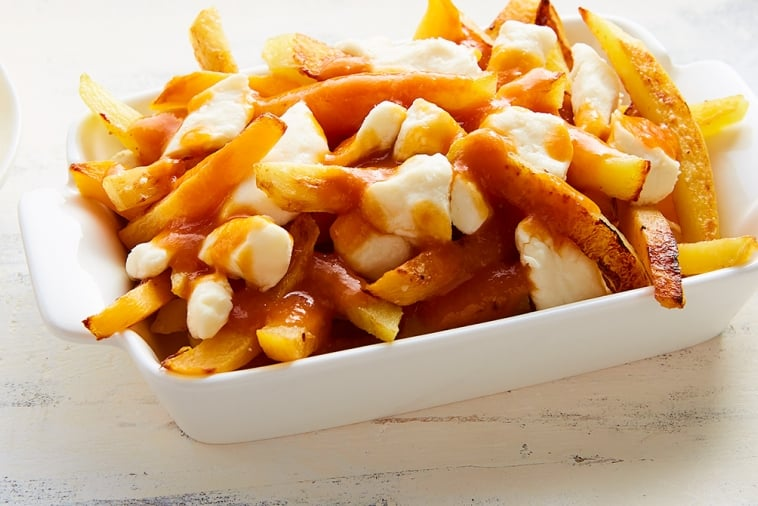

Odin Recipes
Lasagna

Description
Lasagna is a dish that was originated in Italy. It's taste and the texture has made it famous all around the world.
The lasagna in the image above is a cheese lasagna. This is the most basic and common lasagna dish in Italy. People have it at lunch and dinner.
Ingredients
- Lasagna noodles, preferably no-boil noodles
- Whole milk ricotta cheese
- Ground black pepper
- Egg
- Basil leaves
- Red sauce or spaghetti sauce
- Mascarpone cheese
- Parmigiano Reggiano or Grana Padano cheese
- Mozarella cheese
- Fontina cheese
- Sea salt
Steps
- Heat the oven to 350 degrees Fahrenheit. Lightly oil a 13-inch by 9-inch baking dish or spray with non-stick cooking spray.
- Mix the ricotta, mascarpone, parmesan, salt, pepper, and beaten egg in a medium bowl.
- Spread one cup of sauce over the bottom of the dish.
- Place 3 to 4 lasagna noodles down, overlapping them slightly. Depending on your dish, you might need to break a noodle into smaller pieces to fill any gaps.
- Spread half of the ricotta-mascarpone mixture over the noodles, then scatter half of the basil leaves on top.
- Add a second layer of noodles, and then spread 1 cup of sauce over them.
- Scatter half of the mozzarella cheese and half of the fontina cheese over the sauce.
- Add a third layer of noodles, spread the remaining ricotta-mascarpone mixture over them, and then scatter the remaining basil leaves on top.
- Finish with the fourth layer of noodles and spread the remaining sauce on top (about 1 cup). Finally, finish with the remaining mozzarella and fontina cheeses.
- Bake the lasagna uncovered until the cheese bubbles and the noodles cook; about 30 minutes. For a golden-brown top, broil for an additional one to two minutes. If your dish is filled to the top, consider placing it onto a baking sheet before baking in the oven to prevent any oven mess from overflowing cheese and sauce.
Poutine

Description
Poutine is a Canadian dish. It's usually eaten in a party or a communion-type situation.
It's ingredients are simple; french fries, cheese and gravy. Poutine is also eaten in eating competitions
Ingredients
- 1 celeriac peeled and cut into sticks (about 1½ cups – 375 mL)
- 1/2 small rutabaga peeled and cut into sticks (about 1½ cups – 375 mL)
- 2 parsnips peeled and cut into stick
- 4 potatoes peeled and cut into stick
- 3 tbsp (45 mL) butter melted
- Salt and freshly ground pepper
- 1 tbsp (15 mL) butter
- 1/2 onion chopped
- 2 cloves garlic chopped
- 1 cup (250 mL) acorn squash peeled and diced
- 1/2 cup (125 mL) fire cider or other cider
- 1 tbsp (15 mL) flour or cornstarch
- 2 cups (500 L) beef broth no salt added
- 1/4 cup (60 mL) tomato paste
- 13 oz (400 g) Canadian cheese curds
Steps
- Preheat oven to 475°F (250°C).
- Place root vegetables on a baking sheet. Coat with melted butter. Season generously with salt and pepper.
- Cook in the oven for 30 min or until vegetables are tender and golden, turning occasionally.
- Meanwhile, to make the sauce, melt butter on medium-high heat in a saucepan. Cook onion and garlic for 2 min.
- Add squash and deglaze with cider.
- In a bowl, mix flour with broth. Add tomato paste and stir. Pour mixture into the saucepan. Bring to a boil and simmer on medium heat for 10 min or until squash is tender.
- Purée mixture in saucepan using a hand blender. Keep hot while root vegetables cook.
- Divide half the cheese among 4 bowls. Top with oven-roasted vegetables and garnish with remaining cheese. Drizzle with sauce and serve immediately.
Sauerkraut

Description
Sauerkraut is a German dish. It's generally eaten as a side dish.
Sauerkraut has a strong, pungent flavor. It goes well with fatty meat dishes and beers.
Ingredients
- 1 tablespoon bacon drippings
- 1 cup finely chopped onion
- 2 (16 ounce) packages sauerkraut, undrained
- ½ cup chicken stock
- ½ cup cooking sherry
- 1 tablespoon packed brown sugar
- 1 teaspoon caraway seeds
Steps
- Heat bacon drippings in a large skillet over medium heat. Cook and stir onion in hot bacon drippings until soft and translucent, about 5 minutes
- Place sauerkraut with juice into a large bowl and cover with water. Use your hands to squeeze out as much water and juice as possible. Add squeezed sauerkraut to onion in the skillet.
- Stir chicken stock, sherry, brown sugar, and caraway seeds into sauerkraut mixture. Reduce heat to low; simmer, stirring occasionally, until most of the liquid has evaporated, 30 to 40 minutes.